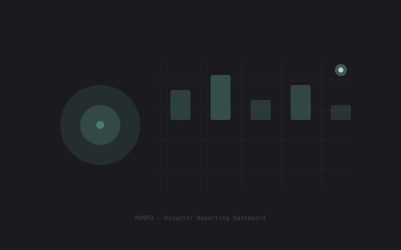

MANFO
AI-Powered Disaster Reporting Platform

React Native, Expo, Firebase, Gemini AI, Whisper, Google Maps
Overview
A multilingual disaster reporting and response system integrating AI image analysis, voice transcription, and real-time incident mapping across Telegram, LINE, and native mobile apps (iOS + Android). Built to serve disaster-affected populations without language barriers.
The Problem
In disaster situations, language barriers can prevent people from reporting incidents or accessing help. Existing systems often support only one language and require typing — which is difficult during emergencies.
The Solution
MANFO enables disaster reporting through multiple channels (Telegram bot, LINE bot, and a native mobile app) with support for Korean, English, and Burmese. Users can report incidents by taking a photo (AI analyzes the image) or recording voice messages (transcribed automatically).
Key Features
- AI-powered incident reporting via image analysis (Gemini 2.5/3.1 Flash Lite)
- Voice-to-text transcription for hands-free reporting (Whisper large-v3)
- Real-time incident map with location-based filtering (Google Maps API)
- Emergency Unit Dashboard with role-based access control (RBAC)
- Multi-channel: Telegram Bot, LINE Bot, React Native mobile app
Tech Stack
- Frontend: React Native + Expo, TypeScript
- Backend: Node.js + Express.js, Firebase (Firestore, Storage, Auth, Admin SDK)
- AI: Gemini 2.5/3.1 Flash Lite, Whisper (whisper-large-v3), Llama models
- Infrastructure: Google Cloud Run, Docker, Google Maps API
- Security: RBAC, Firebase security rules, ZXCVBN password strength
Engineering Practices Learned
- Git branching strategy (
feature/naming) and PR review process - NoSQL denormalization for query performance with composite indexes
- State machine (FSM) for managing async multi-channel conversations
- Defensive coding for handling unexpected AI responses
- Cost optimization: Google Cloud monitoring, API call minimization, response caching
Key Insights
- "The key is how you design and manage data" — data structure affects query performance and scalability
- Generating consistent JSON from LLM requires careful prompt design; defensive parsing is essential
- Supporting Korean, English, and Burmese showed how technology can serve disaster-affected populations without language barriers
Deliverables
- Telegram Bot (AI-powered disaster reporting)
- LINE Bot (multi-channel support)
- Mobile App (iOS + Android, App Store + Play Store deployed)
- Emergency Unit Dashboard (admin panel)
- Real-time incident map with filtering